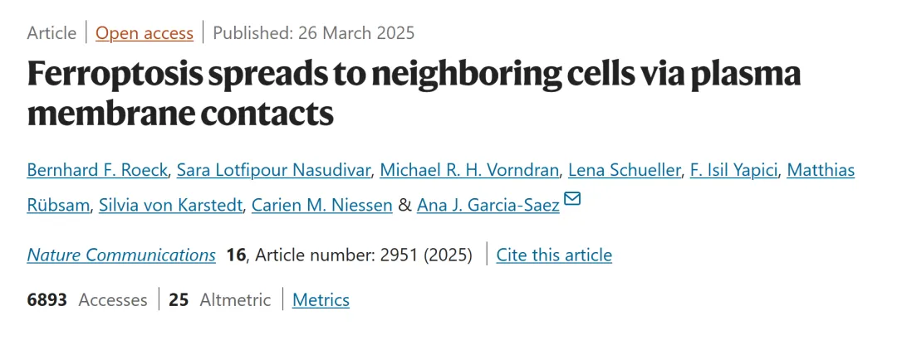
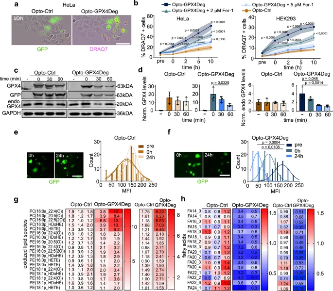
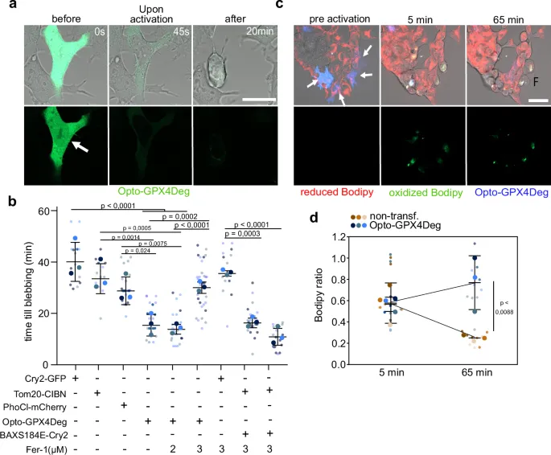
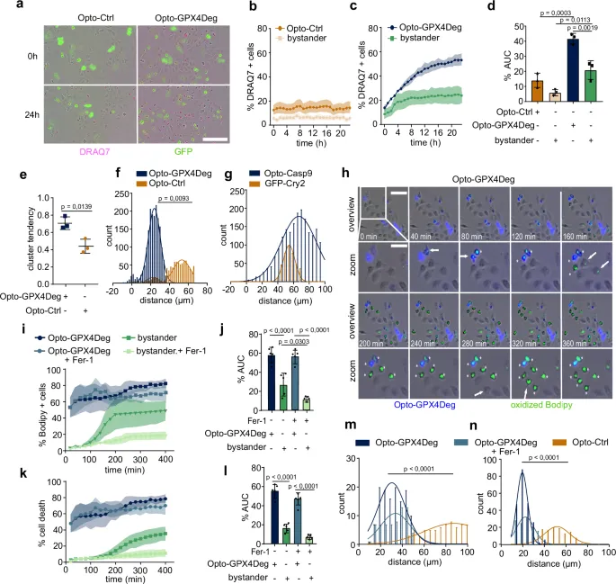
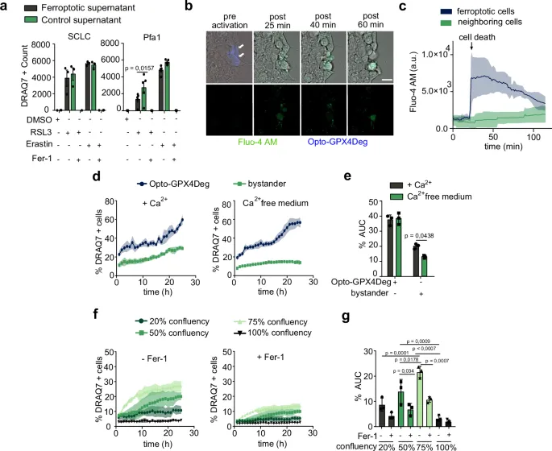
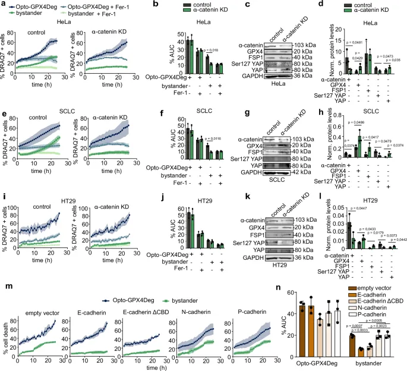
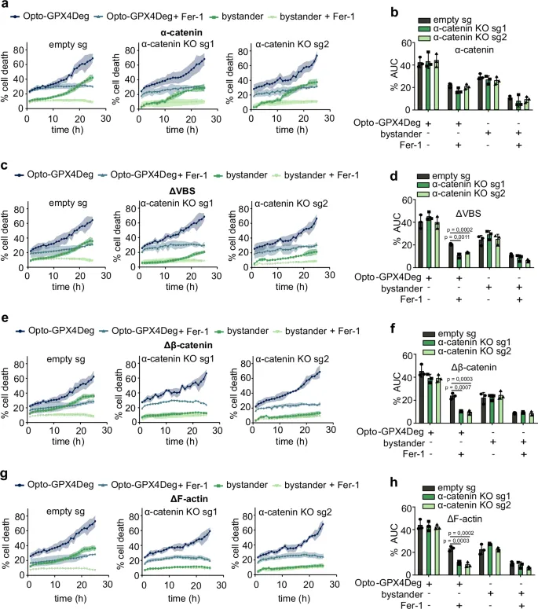
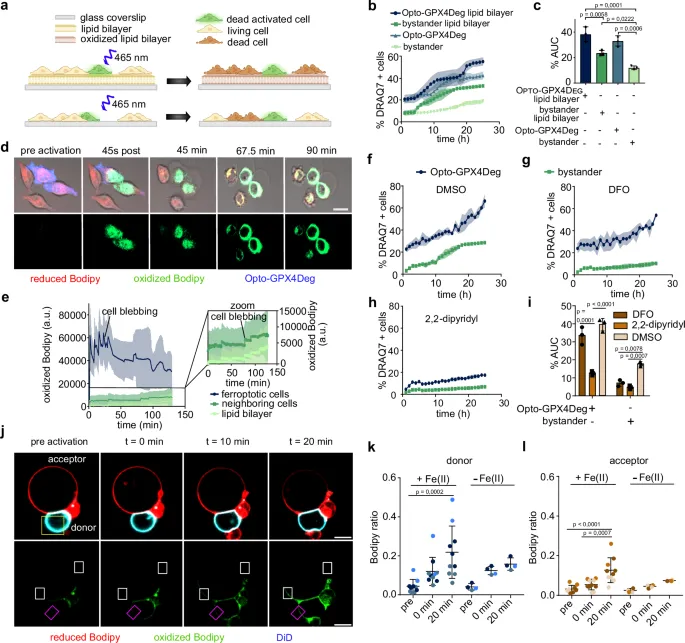

25年《NC》：铁死亡也能传染！
原文：https://mp.weixin.qq.com/s?__biz=MzAwMzIzOTk5OQ==&mid=2247529432&idx=1&sn=749087f52d280769d3f9358ff79ee502&chksm=9b3c0a88ac4b839e5a40ea8903b71c680155cad8e4bb8e6cebbaf525ef0c0b8ca405c0c2a70c#rd 合集：文献速递
一、写在前面
本次分享的是《Nat Commun》（IF=14.7）的文章****， 几乎是纯湿实验证明了铁死亡能够通过质膜接触在相邻细胞间传播。****感兴趣的同学可以看看原文：Bernhard F. Roeck, Sara Lotfipour Nasudivar, Michael R. H. Vorndran,et al."Ferroptosis spreads to neighboring cells via plasma membrane contacts" ，DOI: 10.1038/s41467-025-58175-w
链接：https://pubmed.ncbi.nlm.nih.gov/40140422/

文章摘要：
铁死亡是一种独特的程序性细胞死亡形式，以铁离子依赖性和脂质过氧化的过度积累为特征，近年来因其与多种病理过程的关联而备受关注。尽管已有研究表明铁死亡可能参与疾病组织中坏死的扩散，如神经退行性疾病和癌症，但其在细胞间的传播机制 仍缺乏系统性阐明。本文通过引入一种创新的光遗传学工具——Opto-GPX4Deg ，并结合活细胞成像 、Western blot分析 以及C11-BODIPY染色 等技术，实现了对铁死亡的精准诱导与实时监测。研究者进一步运用脂质组学分析 、DRAQ7细胞死亡染色 、Fluo-4-AM钙指示剂检测 以及基因敲低/敲除 （如α-连环蛋白）和过表达 等分子生物学手段，辅以脂质双分子层实验 和巨型单层囊泡（GUV）系统 等体外模型，首次揭示了铁死亡通过相邻细胞间质膜接触传播的现象及其分子基础。研究表明，铁死亡的跨细胞传播依赖于紧密的细胞间接触，特别是通过α-连环蛋白介导的细胞连接，以及细胞外铁离子的参与，而脂质过氧化的膜间转移是其关键执行步骤。这一发现不仅拓展了我们对铁死亡机制的认识，也为调控铁死亡在疾病治疗中的应用提供了新的思路。通过本文的解读，希望读者能够深入理解铁死亡的传播特性及其潜在的生物医学意义。
实验还得搞起来：实验基地六月课表
如果需要数据分析指导 、生信热点全文复现 、自测数据个性化分析 辅导、常态化实验学习，欢迎联系客服微信[Biomamba_zhushou]
** **
二、主要结果
1.光诱导GPX4降解可以精准地诱导铁死亡
研究团队开发了一种名为Opto-GPX4Deg 的光遗传学工具，通过光驱动的GPX4耗竭来精准诱导铁死亡，以研究其分子机制和细胞反应。该工具将GPX4与GFP和LOVpepdegron结构域融合，在蓝光照射下，LOVpepdegron暴露RRRG降解序列，触发GPX4通过泛素-蛋白酶体途径降解（补充图1a）。实验中使用optoPlate-96设备对表达Opto-GPX4Deg的HEK293和HeLa细胞进行光照，并通过活细胞成像追踪细胞死亡动态，结果显示光照后细胞死亡显著增加，与光照强度正相关（补充图1i, j），且可被铁死亡抑制剂ferrostatin-1（Fer-1）剂量依赖性抑制（图1b），证实了铁死亡的发生 。Western blot分析表明，光照后Opto-GPX4Deg融合蛋白及内源性GPX4水平显著降低（图1c, d），单细胞水平GFP荧光强度也下降（图1e, f）。脂质组学分析进一步揭示，光照激活的Opto-GPX4Deg细胞中氧化脂质 （如氧化磷脂酰胆碱）显著富集，脂肪酸含量减少（图1g, h），符合铁死亡的脂质过氧化特征 ，而对照组Opto-Ctrl（无降解序列）未显示类似变化。单细胞分析表明，Opto-GPX4Deg激活后细胞死亡时间为13-20分钟（平均17分钟），显著快于对照组（图2b），C11-BODIPY染色验证了脂质过氧化的增加（图2c, d）。总之，Opto-GPX4Deg通过光控降解GPX4有效诱导铁死亡 ，为研究铁死亡的分子机制及潜在应用提供了强大工具，实验结果与图1和图2一致，凸显了光遗传学在细胞死亡研究中的潜力。

图1

图2
2.铁死亡细胞能够诱导相邻细胞发生铁死亡
研究利用Opto-GPX4Deg光遗传学系统，探索铁死亡在细胞群体中的传播特性，发现铁死亡不仅局限于被光照激活的细胞，还能诱导未转染的旁观者细胞发生死亡 ，这一现象在对照组Opto-Ctrl中未观察到（图3a-d）。通过活细胞成像和DRAQ7染色，研究者发现表达Opto-GPX4Deg的细胞首先死亡，随后旁观者细胞以簇状模式 （Hopkins统计值0.67）发生死亡，表现出非随机分布 （图3e），而对照组死亡分布随机（值0.43）。距离分析显示，死亡的旁观者细胞与激活细胞的距离较短，约为HeLa细胞直径（~23 µm），提示传播依赖于细胞邻近性 （图3f），且此特性为铁死亡特有，因光诱导的凋亡未显示类似行为（图3g）。进一步实验使用C11-BODIPY染色揭示，激活细胞首先积累氧化脂质，随后邻近旁观者细胞也出现脂质过氧化和死亡，表明铁死亡通过脂质氧化传播 （图3h-l）。铁死亡抑制剂Fer-1可显著降低旁观者细胞的死亡率，但不影响激活细胞的死亡（图3k, l），进一步验证了传播的铁死亡特性。对照实验确认，旁观者细胞的死亡并非由低水平Opto-GPX4Deg表达引起（补充图1k）。这些结果共同证明，铁死亡能够通过邻近细胞间的脂质过氧化传播 ，为理解其在疾病组织坏死扩散中的作用提供了重要证据，实验数据与图3一致。

图3
3. 破坏细胞-细胞接触会消除铁死亡的传播
接下来，作者发现破坏细胞-细胞接触可完全阻断铁死亡的传播 。实验首先测试了铁死亡细胞释放的条件培养基，发现其无法诱导健康细胞死亡，排除了可溶性因子的主要作用 （图4a）。随后，研究者通过Fluo-4-AM钙指示剂检测发现，铁死亡细胞中胞质钙通量增加，但邻近细胞无显著钙内流，表明钙信号并非传播的关键（图4b, c）。然而，细胞外钙耗竭阻断了铁死亡传播 ，而不影响单个细胞的铁死亡敏感性（图4d, e），提示钙可能通过钙粘蛋白维持细胞接触的必要性。细胞密度的实验进一步证实，高细胞汇合度增强了旁观者细胞对铁死亡的敏感性，但极高密度下敏感性下降（图4f, g）。为直接验证细胞接触的作用，研究者敲低HeLa细胞中的α-连环蛋白 （钙粘蛋白复合物关键成分），发现其完全消除了铁死亡从Opto-GPX4Deg激活细胞向旁观者细胞的传播 （图5a-d），在SCLC细胞中也得到类似结果（图5e-h）。有趣的是，E-钙粘蛋白过表达阻断传播，而N-或P-钙粘蛋白无此效应（图5m, n），且E-钙粘蛋白的抗铁死亡作用独立于α-连环蛋白（图5m, n）。通过α-连环蛋白敲除（KO）及外源性重建实验，研究确认野生型α-连环蛋白可完全恢复传播，而部分或完全破坏细胞接触的突变体（Δβ-catenin、ΔF-actin）无法恢复（图6）。这些结果表明，α-连环蛋白介导的细胞-细胞接触是铁死亡传播的必要条件 ，实验数据与图4-6一致，为揭示铁死亡传播的分子机制提供了重要见解。

图4

图5

图6
4. 跨越相对膜的铁依赖性脂质过氧化物的转移介导铁死亡的传播
研究者假设，增强细胞膜接触可促进铁死亡传播 ，实验中通过无毒浓度blebbistatin处理α-连环蛋白敲低（KD）的细胞，恢复了铁死亡传播，因其通过抑制皮质收缩增加细胞接触（补充图10）。进一步实验中，将Opto-GPX4Deg细胞接种于含不饱和脂质的脂质双分子层上，发现相比玻璃基质，脂质双分子层显著加速了脂质过氧化和铁死亡传播 ，而不影响单个细胞的铁死亡敏感性，Fer-1可阻断此效应（图7b-e）。C11-BODIPY染色显示，双分子层本身也被氧化，表明脂质过氧化物通过膜平面扩散至未激活细胞 （图7d, e）。为探究铁的作用，细胞外铁螯合剂DFO处理抑制了传播 但不影响激活细胞的死亡，而2,2-联吡啶同时阻断激活和旁观者细胞的铁死亡，提示膜外侧铁依赖的脂质氧化至关重要 （图7f-i）。为提供直接证据，研究者构建了纯脂质巨型单层囊泡（GUV）系统，包含光敏剂DMMB的“供体”GUV在光照后诱导脂质氧化，氧化信号通过膜接触传播至“受体”GUV，且此过程依赖外部铁 （图7j-l）。对照实验确认，无膜接触或光照时无氧化传播（补充图12-13）。这些结果揭示，铁死亡通过紧密接触的质膜间脂质过氧化物转移传播，无需额外细胞成分 ，实验数据与图7一致，为理解铁死亡的物理化学机制提供了关键见解。

图7
三、最后聊聊
综上所述，这项研究利用光遗传学技术，系统验证了铁死亡通过相邻细胞间质膜接触传播的机制 ，明确了细胞紧密接触和铁依赖性脂质过氧化在这一过程中的核心作用 。实验结果显示，铁死亡的传播依赖于α-连环蛋白介导的细胞-细胞连接以及细胞外铁离子的存在 ，通过破坏这些连接或使用铁螯合剂可有效阻断传播。此外，在无细胞成分的脂质体模型中，研究进一步证实了铁依赖性脂质过氧化反应能够在膜间直接传递 ，揭示了其物理化学本质 。然而，尽管本研究在体外体系中取得了突破性进展，铁死亡传播在体内复杂生理环境中的行为及其与疾病进程的具体关系仍需进一步探索 。展望未来，结合体内模型和临床研究验证这一机制，或将为铁死亡相关疾病（如神经退行性疾病和癌症）的干预提供新的理论支持和治疗靶点 ，助力精准医学的发展。

如何联系我们

 留一个领取资料、免费两周学习版服务器的微信号[Biomamba_zhushou]，方便各位随时交流。同时我们也构建了交流群矩阵，欢迎大家入群讨论。
大家可以阅读完这几篇之后添加给生信入门初学者的小贴士
没有检索，就没有发言权
留一个领取资料、免费两周学习版服务器的微信号[Biomamba_zhushou]，方便各位随时交流。同时我们也构建了交流群矩阵，欢迎大家入群讨论。
大家可以阅读完这几篇之后添加给生信入门初学者的小贴士
没有检索，就没有发言权
已有生信基地联系方式的同学无需重复添加

 您点的每个赞和在看，我都认真当成了喜欢
您点的每个赞和在看，我都认真当成了喜欢